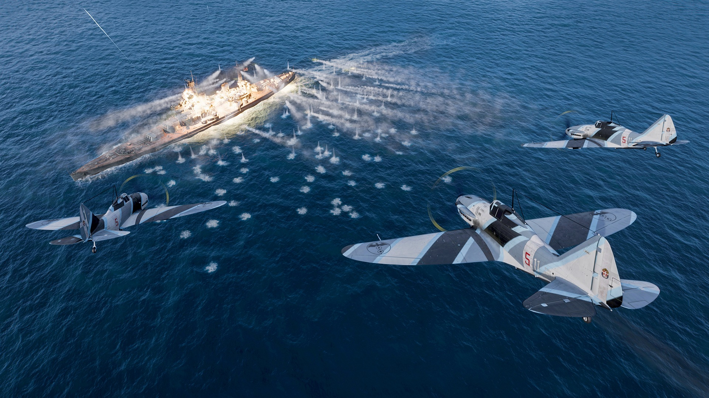
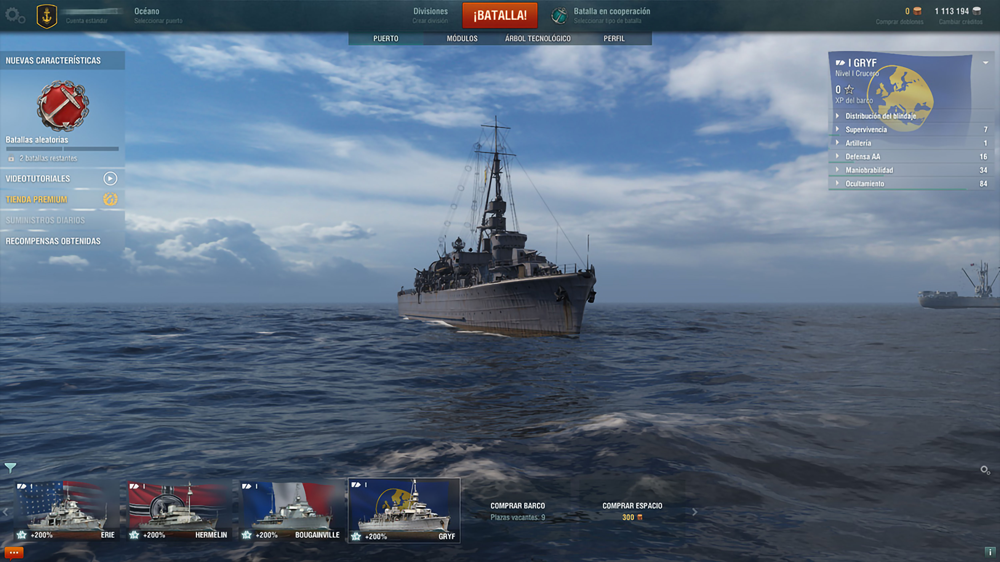
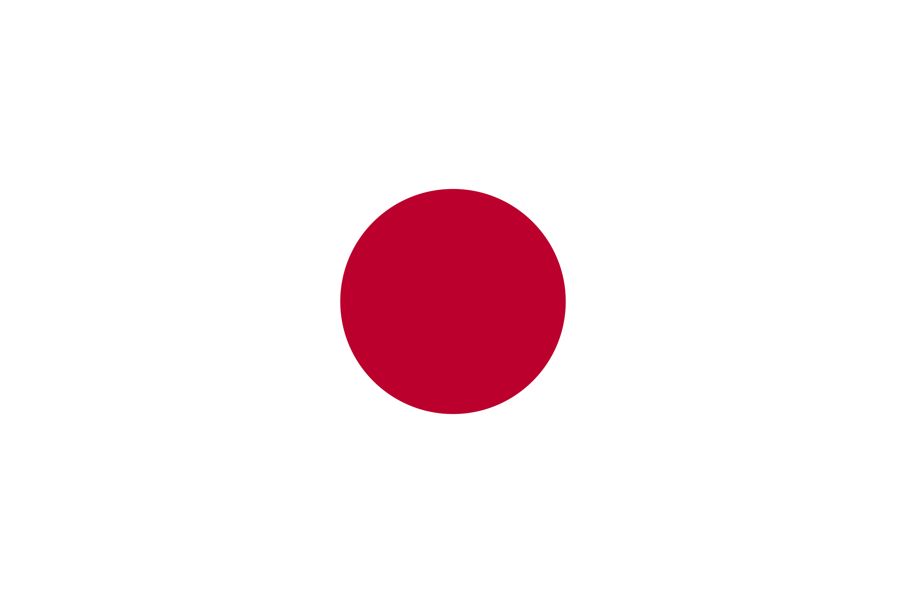
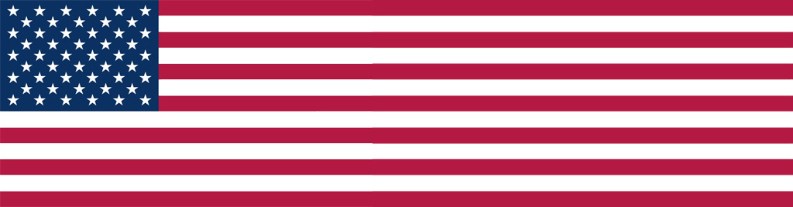
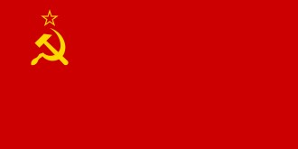
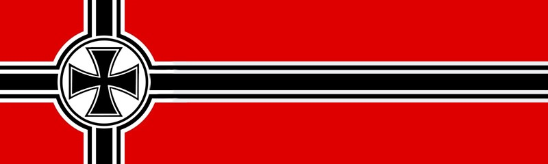
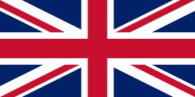
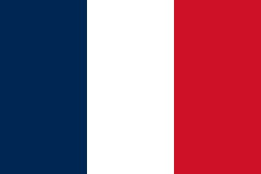

Es un videojuego multijugador en línea gratuito de combate naval táctico, ambientado en el siglo XX. Los jugadores comandan una flota de barcos de guerra históricos como destructores, cruceros, acorazados y portaaviones, cada uno con características únicas como velocidad, potencia de fuego, defensa aérea o estrategia aérea...

Puerto
Cuando obtengas un barco, este se mostrará en el puerto. Puedes cambiar entre tus barcos obtenidos en el panel...

Destructores
Son el tipo de barco de guerra más rápido y ágil. Cuenta con armamento ligero y torpedos devastadores...
Torpedos
Alta maniobrabilidad
Cortina de humo
Cruceros
Su variedad de armamento y consumibles hacen de ellos los más versátiles en los encuentros navales...
Destructores
Son el tipo de barco de guerra más rápido y ágil. Cuenta con armamento ligero y torpedos devastadores...
Cadencia de tiro
Antiaéreas eficaces
Versatilidad
Acorazados
Auténticos pesos pesados, capaces tanto de repartir como de absorber daño en grandes cantidades...
Potencia de fuego
Gran supervivencia
Control en el campo
Portaaviones
El arma principal de un portaaviones son sus escuadrones aéreos. Por sí solos no tienen defensa significativa...
Aviación
Reconocimiento
Estrategia
Submarinos
Los submarinos son cazadores frágiles, pero muy peligrosos. Pueden atacar a objetivos en superficie y sumergidos...
Apuntamiento acustico
Baja detectabilidad
Profundidades bajas
Naciones
Yamato, Missouri, Aurora, Bismarck, Belfast, Richelieu, Roma, y más. Cada una con historias y caracteristicas unicas.






Navegación
W - Acelerar | S - Frenar | A/D - Girar | Q/E - Timón bloqueado. Cambia de rumbo y velocidad para evadir ataques...
Artillería
Los cruceros, acorazados y destructores vienen equipados con cañones de batería principal: Para apuntar correctamente hacia un barco enemigo en movimiento, sitúa tu retícula frente a este, anticipando la posible ubicación en la que vaya estar cuando tus proyectiles impacten.
Muévete para girar los cañones del barco.
Haz clic para realizar un único disparo.
Haz clic y mantén pulsado para abrir fuego secuencial.
Haz doble clic para lanzar una salva de batería principal.
Haz clic en la rueda de desplazamiento para disparar y seguir el proyectil con la cámara.
Antes de hacer caer una lluvia de munición
sobre tu enemigo, trata realizar un disparo de prueba para ver dónde aterriza y garantizar que el resto de tus disparos lo alcancen.
Munición
HE: Provocan incendios, bajo índice de penetración.
AP: Mayor daño, no provocan incendios.
SAP: Equilibrio entre daño y penetración.
Torpedo: Daño masivo a corta distancia.
Cómo usar portaaviones
Jugabilidad:
Puedes controlar un escuadrón o el portaaviones, pero solo de uno en uno. Deja que tu barco navegue con el piloto automático y céntrate únicamente en lanzar lluvias de disparos sobre tus enemigos.
Escuadrones:
Los portaaviones tienen 3 tipos de aviones: Aviones de ataque (cazas equipados con chetes), bombarderos (aviones pesados y lentos) y torpederos (con un
torpedo similar al de los destructores).
En función del tipo de escuadrón, verás una elipse para el lanzamiento de cohetes y bombas, o una
retícula para un ataque de torpedos. Cuando estés listo para el ataque, la retícula se volverá verde.
Clic para activar el modo de ataque.
Otra vez clic para atacar.
Aviones
Aviones de ataque: Aviones de ataque: Los aviones de ataque llevan cohetes sin dirección fija y pueden infligir una gran cantidad de daño a objetivos con blindaje ligero. Los cohetes HE pueden causar incendios, mientras que los cohetes AP son capaces de infligir una gran cantidad de daño al barco enemigo, incluyendo la ciudadela.
Torpederos: Los bombarderos torpederos son el arma preferida de los portaaviones para causar impactos. Son más eficaces contra objetivos grandes con un blindaje pesado. El cono de lanzamiento de los bombarderos torpederos se divide en varios sectores, según el número de torpedos que el grupo de ataque esté listo para lanzar.
Bombarderos: Los bombarderos son aviones equipados con bombas de alto explosivo (HE) o bombas perforantes (AP). Un bombardero en picado se aproxima a una altura elevada y a continuación desciende hacia el objetivo hasta lanzar la bomba a una cota baja altitud. Acto seguido, interrumpe el descenso y se aleja.
Tipos de Barcos
Existen distintos tipos de barcos para iniciar cualquier batalla, cada uno se diferencia del otro por medio de obtención, por las mejoras que puede traer, por medio de los consumibles que incluye, etc.
Barcos desarrollables: Una amplia colección de buques de diferentes naciones y tipos, disponible para todos los jugadores. Para desarrollarlos y comprarlos, necesitarás XP y Créditos.
Barcos de élite: El barco adquiere el estatus de élite una vez que desbloqueas todas las mejoras de módulos del barco y los barcos sucesivos.
Barcos especiales: Los barcos especiales son todos los barcos de nivel X no desarrollables, barcos de alquiler para varios eventos y los barcos de acceso anticipado que se pueden obtener en la Armería.
Barcos premium: Se pueden adquirir en el juego a cambio de doblones en el árbol tecnológico.